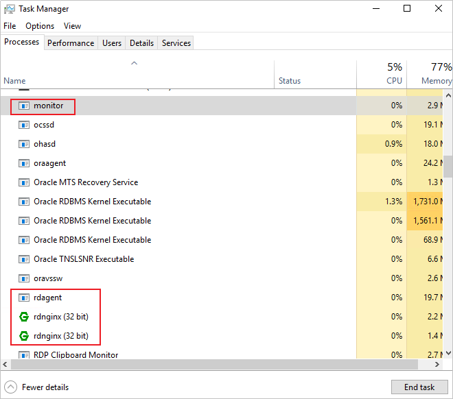

当客户端出现离线状态，可参考本章节排查离线原因。
Linux OS/AIX OS/Solaris OS
- 使用PuTTY工具以root账户登录待安装客户端的主机。
- 查看客户端所在主机的防火墙是否关闭。
防火墙开启状态下可能会拦截本产品与客户端所在主机的通信请求。如果防火墙开启且不能直接关闭防火墙的场景下，请开放《OceanProtect DataBackup 1.5.0-1.6.0 通信矩阵》中对应的端口。

如果要确保客户端状态为“在线”，至少需确保本产品的25082端口以及客户端所在主机上的59520-59559端口段已开放。
- 执行以下命令，查看客户端进程是否正常。
ps aux | grep rdadmin
当回显4个客户端进程信息时，表示客户端进程正常。否则，请运行“客户端安装目录/DataBackup/ProtectClient”路径下的start.sh脚本，启动客户端进程。
rdadmin 12920 0.7 0.5 2170416 47148 ? Sl 10:56 4:43 /opt/DataBackup/ProtectClient/ProtectClient-E//bin/rdagent rdadmin 13272 0.0 0.0 44272 1156 ? Ss 10:56 0:00 nginx: master process ./rdnginx rdadmin 13273 0.0 0.0 45408 4176 ? S 10:56 0:00 nginx: worker process rdadmin 13307 0.0 0.1 185064 11888 ? Sl 10:56 0:11 /opt/DataBackup/ProtectClient/ProtectClient-E//bin/monitor
Windows OS
- 以Administrator账户登录客户端所在主机。
- 查看客户端所在主机的防火墙是否关闭。
防火墙开启状态下可能会拦截本产品与客户端所在主机的通信请求。如果防火墙开启且不能直接关闭防火墙的场景下，请开放《OceanProtect DataBackup 1.5.0-1.6.0 通信矩阵》中对应的端口。
如果要确保客户端状态为“在线”，至少需确保本产品的25082端口以及客户端所在主机上的59520-59559端口段已开放。
- 查看客户端进程是否正常。
- 在任务栏单击鼠标右键。
- 在弹出的菜单中选择“任务管理器”。
- 在“进程”页签查看客户端相关进程（monitor、rdagent、rdnginx）是否正常运行。
如果客户端进程未正常运行，则请运行“客户端安装目录\DataBackup\ProtectClient”路径下的start.sh脚本，启动客户端进程。
